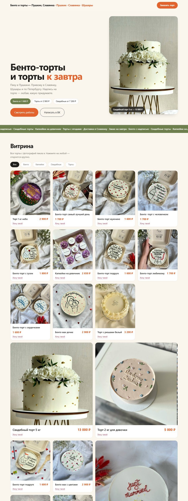
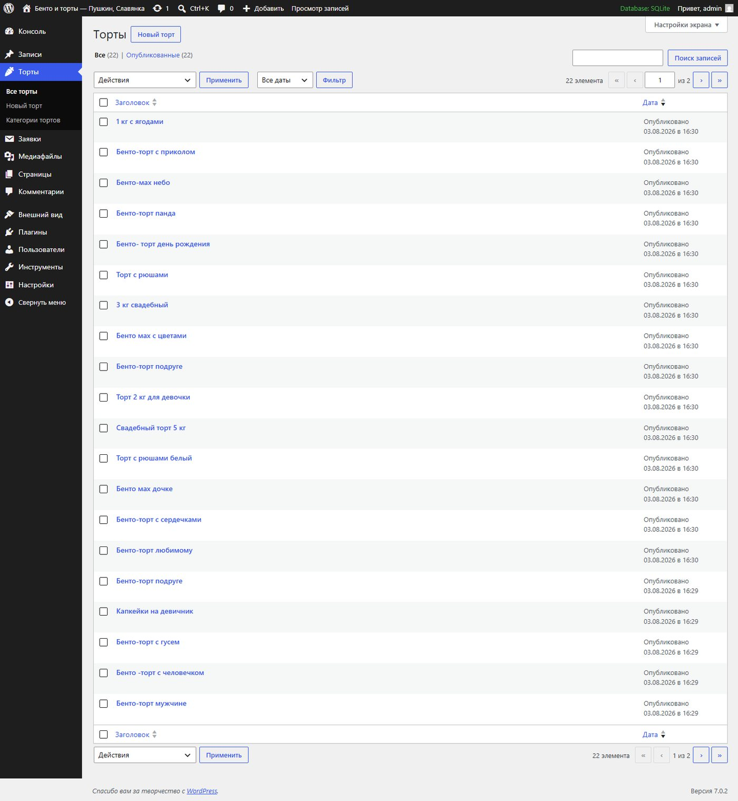
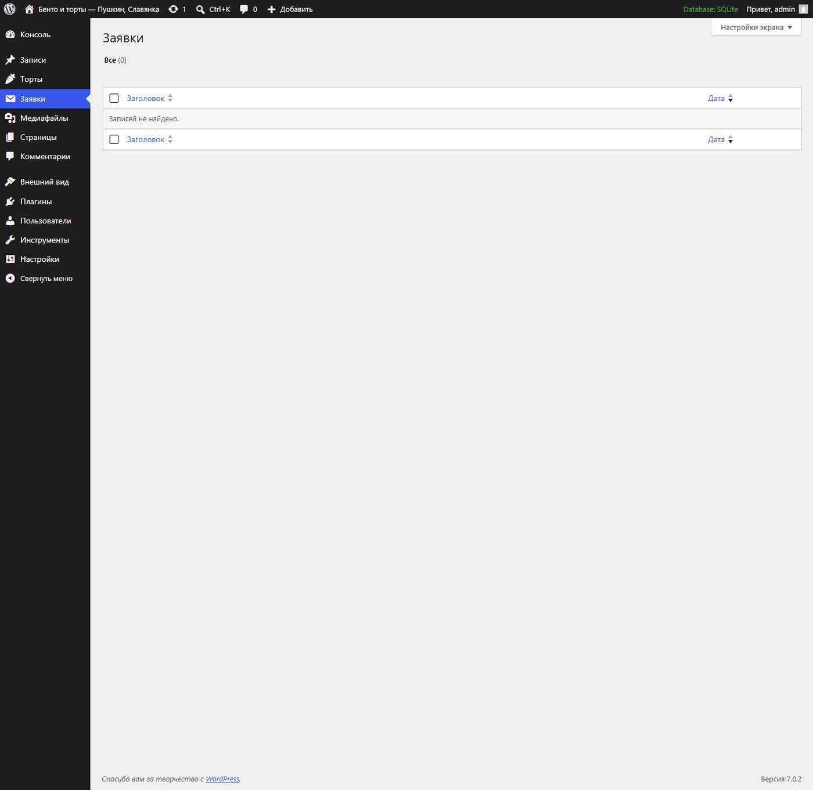
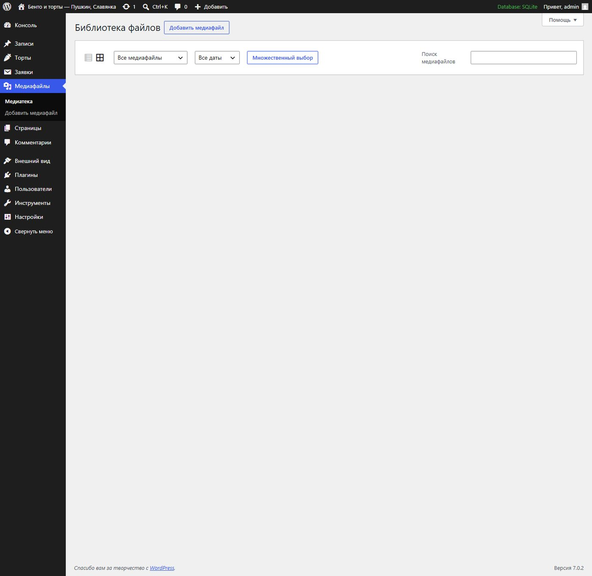
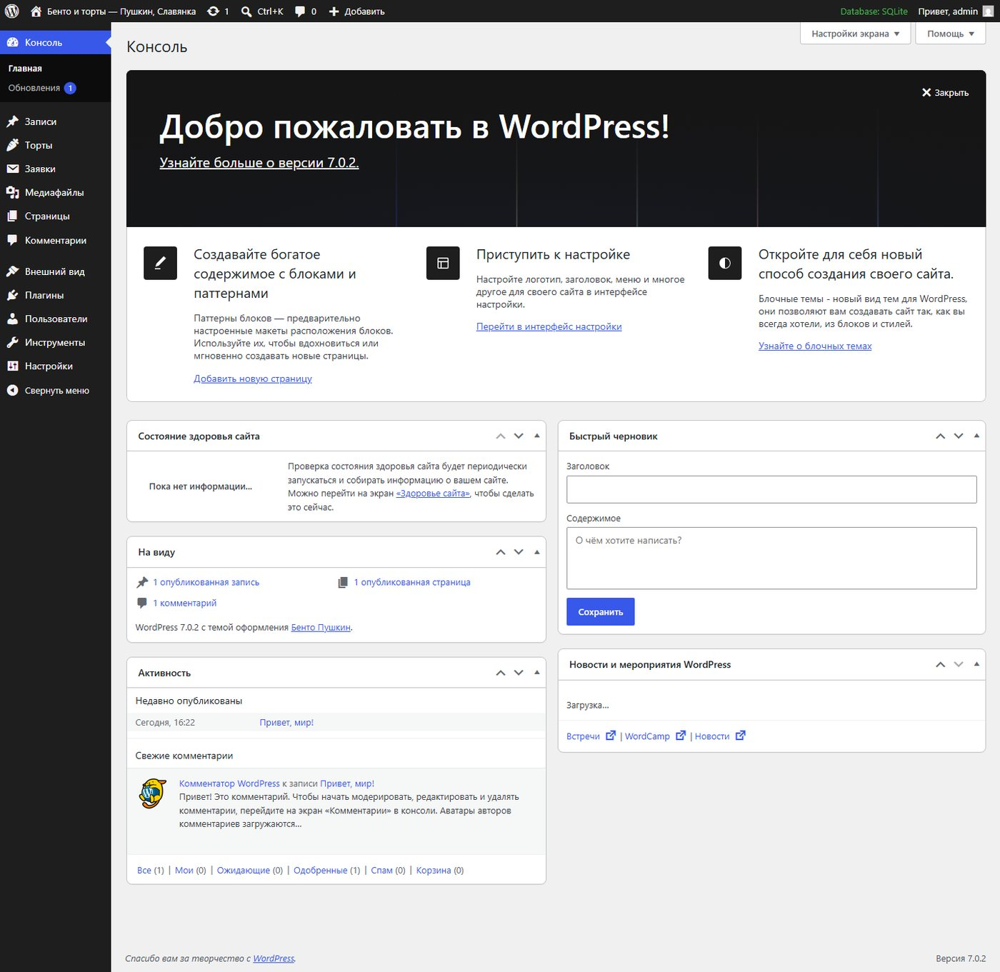

Сайт частного кондитера с админкой, в которой она сама всё меняет
Витрина работ, цены, приём заявок — и понятная панель управления: добавить новый торт можно так же просто, как выложить пост, без разработчика и без вёрстки.
WordPress
Своя тема
22 работы перенесены
Заявки в один клик
Мобильная версия
Задача
У кондитера из Пушкина есть группа ВКонтакте с витриной товаров и живой аудиторией, но нет сайта. Заказы принимаются в личных сообщениях, цены приходится повторять каждому.
22
работы
Перенесены из витрины ВК вместе с фотографиями и ценами.
4
категории
Бенто, торты, свадебные и капкейки — фильтры на сайте строятся из них автоматически.
0
строк кода для клиента
Новый торт добавляется через обычную форму: название, фото, цена.
Как выглядит сайт
Первый экран отвечает на главные вопросы сразу: что, где, от какой цены и как быстро. Дальше — витрина, где самые дорогие работы занимают крупные плитки.

Главная страница. Фильтры по категориям, клик по фото открывает его крупно, под каждой работой — цена и кнопка «Хочу такой».
Панель управления
Главное в этом проекте — не дизайн, а то, что владелец справляется сам. Ниже — реальные экраны админки.

Раздел «Торты». Все работы списком. Кнопка «Новый торт» — и добавляется ещё одна позиция, которая сразу появляется на сайте в нужной категории.Редактор работы. Три понятных поля: название, фотография и цена в рублях. Ни настроек, ни кода — специально убрано всё лишнее.

Заявки. Каждая заявка с сайта сохраняется здесь и не может потеряться в почте.

Медиатека. Фотографии перенесены из группы ВКонтакте.

Консоль. Привычный интерфейс WordPress на русском — тот же, что у миллионов сайтов, поэтому подсказку легко найти в интернете.
Что сделано под капотом
Своя тема, а не готовый шаблон: вёрстка, стили и скрипты написаны под этот проект.
Отдельный тип записей «Торты» — работы не смешиваются с новостями и статьями, у них своя структура и свой адрес.
Поле цены прямо в редакторе: значение подставляется в карточку и участвует в сортировке — самые дорогие работы автоматически получают крупные плитки.
Приём заявок без внешних сервисов: заявка сохраняется в админке, потом подключается дублирование в мессенджер.
Фильтры из категорий: добавили категорию — на сайте появилась новая кнопка, править код не нужно.
Мобильная версия и работа без интернет-зависимостей: сайт не тянет сторонние шрифты и скрипты.
Демонстрационная сборка. Фотографии работ взяты из открытой группы ВКонтакте и принадлежат кондитеру; контакты, цены и тексты уточняются перед публикацией.